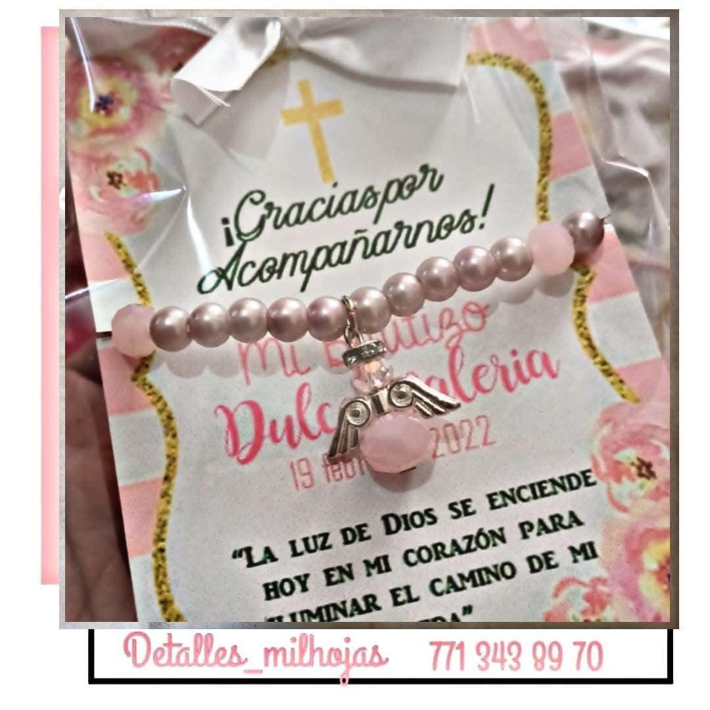

Papel Bond
Blanco, común para impresiones y fotocopias.
Cartulinas
Gruesa, ideal para manualidades y trabajos escolares.

Papel crepé
Flexible y arrugado, usado en decoración y arte.
Papel lustre
Brillante por un lado y mate por el otro; colorido y decorativo.

Papel Opalina
Blanco y rígido, ideal para invitaciones y certificados.
Papel fantasía
Con diseños impresos, usado para forrar o envolver regalos.
Papel couché
Satinado, usado en folletos, revistas o fotografías.

Papel membretado
personalizado con logotipo y datos de empresas.

Papel celofán
transparente o de colores, brillante, usado en envolturas y manualidades.
Papel reciclado
similar al bond pero ecológico.